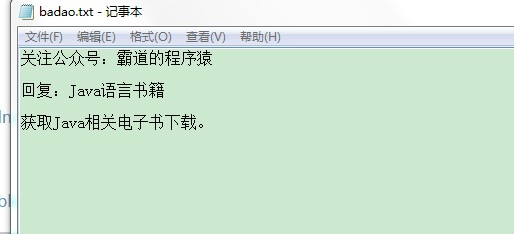
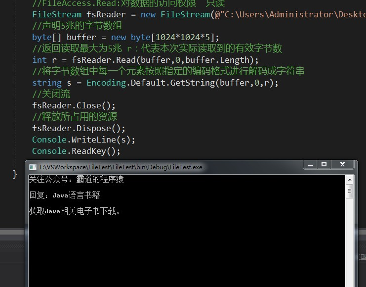

原文出处:本文由博客园博主霸道流氓提供。
原文连接:https://www.cnblogs.com/badaoliumangqizhi/p/11449206.html
原文连接:https://www.cnblogs.com/badaoliumangqizhi/p/11449206.html
场景
File与FileStream的区别
举例：
将读取文件比作是从A桶往B桶运水。
使用File就是整个用桶倒进去，使用FileStream就是使用水管慢慢输送。
FileStream与StreamReader的区别
FileStream是操作字节的，即可以操作任意一种类型的文件。
StreamReader是操作字符的，即只能操作文本文件。
关注公众号
霸道的程序猿
获取编程相关电子书、教程推送与免费下载。
实现
首先新建一个txt文件。

然后编写控制台程序
//FileMode.OpenOrCreate : 文件打开方式 没有则创建 有则打开
//FileAccess.Read:对数据的访问权限 只读
FileStream fsReader = new FileStream(@"C:\Users\Administrator\Desktop\badao.txt",FileMode.OpenOrCreate,FileAccess.Read);
//声明5兆的字节数组
byte[] buffer = new byte[1024*1024*5];
//返回读取最大为5兆 r：代表本次实际读取到的有效字节数
int r = fsReader.Read(buffer,0,buffer.Length);
//将字节数组中每一个元素按照指定的编码格式进行解码成字符串
string s = Encoding.Default.GetString(buffer,0,r);
//关闭流
fsReader.Close();
//释放所占用的资源
fsReader.Dispose();
Console.WriteLine(s);
Console.ReadKey();
运行效果
